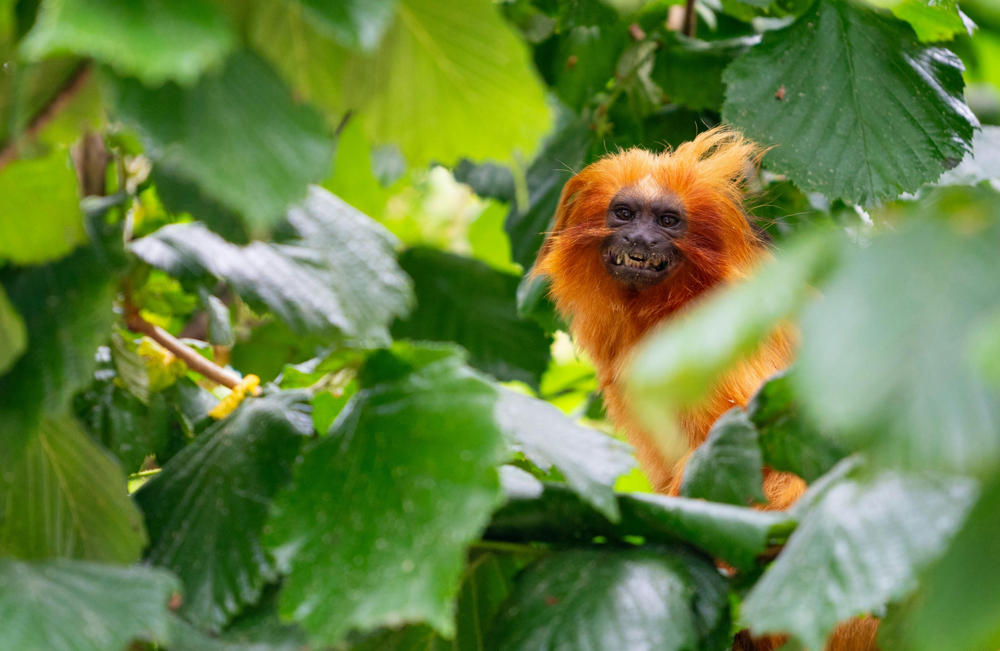

The Golden Lion Tamarin is endangered
Golden Lion Tamarin by Pexels
The current (2022) population of Golden Lion Tamarins is of 2500 animals. The species is endangered because his natural habitat, the Atlantic Forrest, has been fragmented and partially destroyed over the past century. Just like the species relies on its habitat to survive, its habitat relies on the species to help disperse seeds and regenerate the forest. Saving the animals also mean saving the forest.